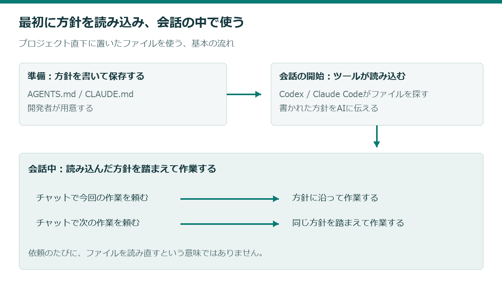

開発の方針を、ファイルに書いて保存する
まず、プロジェクトのフォルダにAGENTS.mdまたはCLAUDE.mdを用意します。そこに、今後の開発でも繰り返し伝えたい方針を書き、保存します。
この準備は、AIに作業を頼む前に行います。具体的な作り方は、次のページから説明します。
会話を始めると、CodexやClaude Codeが読み込む
ファイルを探して読み込むのは、CodexやClaude Codeです。このサイトでいう「AI開発ツール」は、このようにAIを使って開発を進めるためのツールを指しています。
CodexではAGENTS.md、Claude CodeではCLAUDE.mdに書いた方針を、会話を始めるときに読み込みます。読み込んだ内容は、その会話でAIが作業するときの前提になります。
ここでは、プロジェクト直下に置いたファイルを使う基本の流れを説明しています。別のフォルダにある指示を追加で読む場合など、詳しい条件は後半のリファレンスで扱います。


チャットでは、今回の作業を頼む
会話が始まったら、チャットで今してほしい作業を依頼します。AIは、読み込んだ開発の方針を踏まえて、その依頼に取り組みます。
同じ会話で次の作業を頼むときも、その方針を前提にします。依頼のたびに、ファイルの全文を自分で貼り直す必要はありません。
つまり、ファイルは継続して伝える開発の方針を残す場所、チャットは今回してほしい作業を伝える場所です。ファイルに方針を書いただけでは、作業そのものは始まりません。
作業が終わったら、結果を確かめる
AIが何を変更し、どう確認したのかを見ます。ファイルが読み込まれていても、必ず期待どおりに作業する保証はありません。依頼と方針に合った結果かを確かめ、必要なら修正を依頼します。
使っている途中で指示ファイルを書き換えた場合は、現在の会話に必ず即時反映されるとは考えず、保存して新しい会話で確認します。具体的な確認手順は、05で説明します。
ここで覚えておくこと
開発の方針は、会話を始めるときに読み込まれます。その方針を踏まえて、チャットで頼んだ作業に取り組みます。
全体の流れが分かったら、自分のプロジェクトにファイルを用意しましょう。